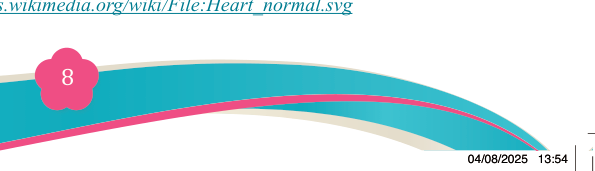
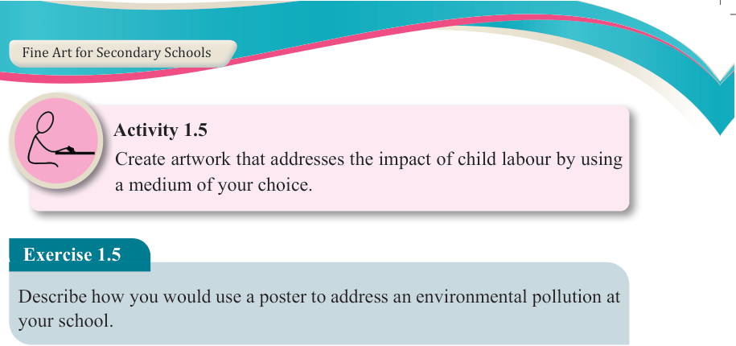
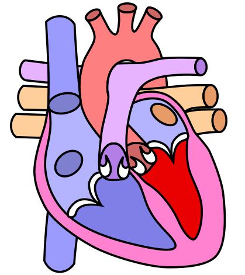

Fine Art for Secondary Schools

8

Student’s Book Form Two

Activity 1.5
Create artwork that addresses the impact of child labour by using a medium of your choice.
Exercise 1.5
Describe how you would use a poster to address an environmental pollution at your school.
Types of functionalist artworks
(a) Illustrations
An illustration can be created as a visual representation, a drawing or a painting
designed to explain, clarify, or enhance a written text, content or idea. It is designed
for use in both printed and digital media, such as posters, fliers, magazines,
advertisements, books, educational materials, greeting cards, video games or
cartoon strips. In real life, illustrations can also function as instructional tools.
For instance, an illustration of the human heart can serve as an educational tool in science or medicine, to help students or medical professionals understand the structure and function of the heart. Figure 1.7 shows an illustration of the human heart.
.

Figure 1.7: Illustration of the human heart
Source: https://commons.wikimedia.org/wiki/File:Heart_normal.svg
04/08/2025 13:54